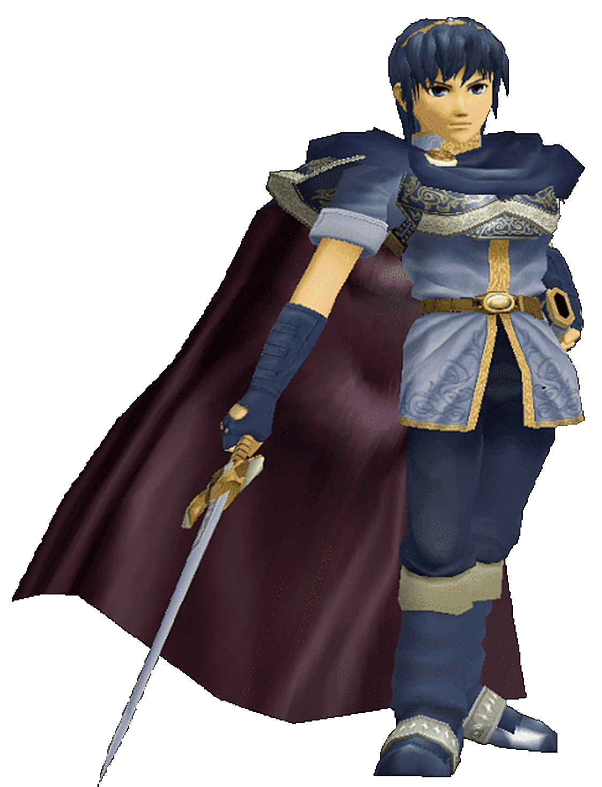

Super Smash Bros. Melee is the second game of the series and its competitive scene
has been strong since the game's release in 2001! Melee is defined by its fast
gameplay and this scene shows no signs of stopping!
Fox: The king of competitive Melee, Fox is very fast and has many tools at his disposal.
His special moves are Shine (down special), Blaster (neutral special), Fox Illusion (side special),
and Fire Fox (up special). Pick this character if you want to move fast and hit hard!

Marth: A sword fighter with range, Marth is a technical fighter who relies on his tipper mechanic
where he deals more damage when he hits the opponent with the tip of his sword. His specials are
Dancing Blade (side special), Counter (down special), Shield Breaker (neutral special),
and Dolphin Slash (up special). Pick this character if you like technical gameplay!
Jigglypuff: small and combo heavy, Jigglypuff dominates the melee scene.
Its specials are Rest (down special), Sing (up special),
Rollout (neutral special), and Pound (side special).
Pick this character if you like combos!
Dreamland 64: This stage has one gimmick on it which is the Whispy Woods. It blows air to the left or right
which causes characters to be moved. Players choose this stage if they think the wind might mess with their
opponent.
Yoshi's Story: This stage is generally chosen for characters who can make use of its platforms
and gimmicks. One of these gimmicks is a moving platform on the sides of the stage which can be used
to recover as a last resort.
Final Destination: This stage has no platforms or gimmicks. When on this stage, it's just a straight brawl
between both players.